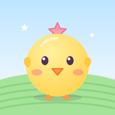
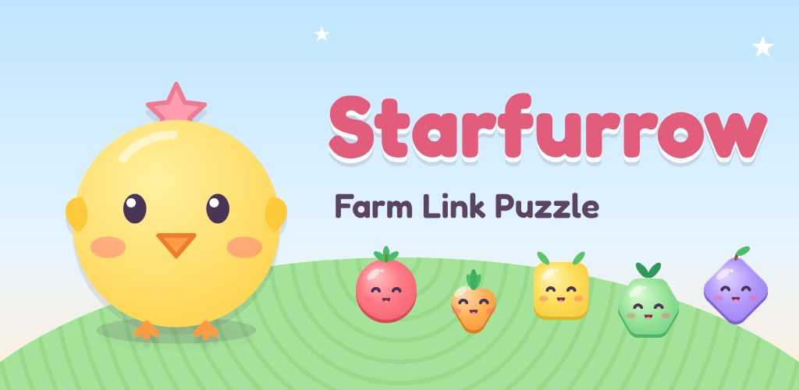
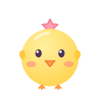

Link three or more
Swipe through friends of the same kind, up, down and sideways. The longer the link, the bigger the cheer.
 kawarimi interactive
kawarimi interactive

A cozy puzzle game for Android
Link the friends, grow the farm.
Draw a line through three or more vegetable friends of the same kind to clear them. Longer links fill the Harvest meter faster, and a full meter clears a whole patch. Pip the chick shows you the ropes.
Free to play · No account needed · Plays offline

The video plays from YouTube once you press play.
Swipe through friends of the same kind, up, down and sideways. The longer the link, the bigger the cheer.

Every friend you clear fills the Harvest meter. When it is full, tap the board to clear a 3x3 patch for free.
Follow the path across the farm from spring to winter. New goals and obstacles keep every world fresh.

The Hoe, Shuffle and Fertilizer get you out of a tight spot, and none of them costs a move.

Fat-fingered a link? Undo it once per level. Calm options turn off blinking or the faces altogether.

Saved on your phone and in your Android backup, with optional cloud save if you sign in with Google.
Starfurrow is free. Ads are optional rewarded videos you only watch when you want extra moves, a booster or coins. Optional purchases are coin packs and a one-time Starter Pack. You do not need an account, and your farm is saved on your phone.